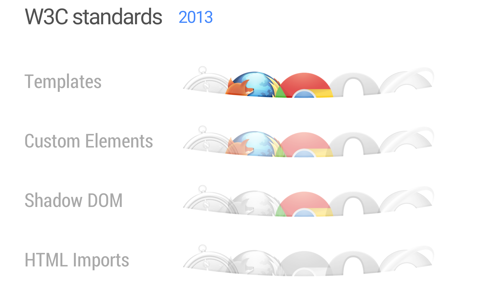
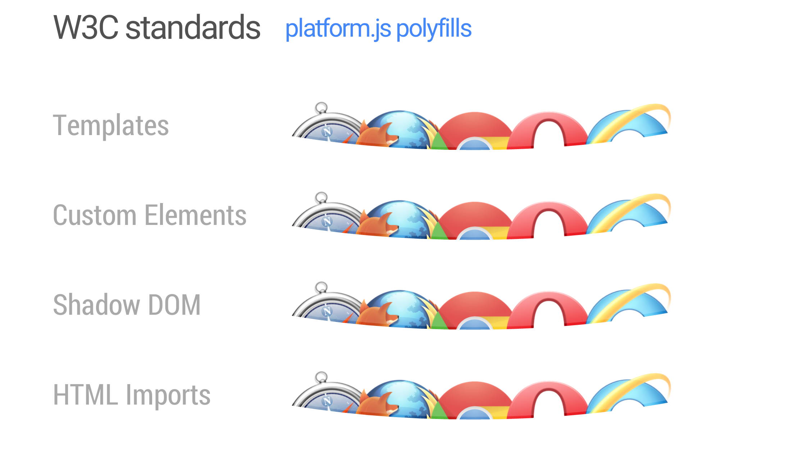

Web Components
A Declarative Renaissance With Polymer
Created by TYRONE MICHAEL AVNIT / @tyronemichael / tyronemichael.com
A little bit about me
- Software engineer
- Specialize in Frontend
- Still in love with Javascript
- Node = Bread & Butter
- Cannot wait to go back to IOS
- Liverpool supporter
Chapter overview
- What are Web Components?
- What problems do they solve?
- Web Components in detail
- It's not all rainbows and flowers
- Meetup example demo
What are Web Components?
“ Web Components usher in a new era of web development based on encapsulated and interoperable custom elements that extend HTML itself. ”
Building Blocks
- Shadow DOM - DOM & style encapsulation boundaries
- HTML Templates - inert chunks of clonable DOM
- Custom Elements - create new HTML elements
- HTML Imports
Who supports Web Components
Polymer to the rescue
But... who uses this tech now?
What problems do Web Components solve?
“ Before we go forward let's go back ”
HTML has not kept up!

Implementing a feature
- No common pattern / structure
- API's are all different
- Overloading HTML
- Hard to use within teams
- Not quick by any means
Bootstrap Tab - HTML
...
...
...
...
Bootstrap Tab - CSS
.nav {
margin-bottom: 0;
padding-left: 0;
list-style: none;
}
.nav > li {
position: relative;
display: block;
}
.nav > li > a {
position: relative;
display: block;
padding: 10px 15px;
}
.nav > li > a:hover,
.nav > li > a:focus {
text-decoration: none;
background-color: #eeeeee;
}
.nav > li.disabled > a {
color: #777777;
}
.nav > li.disabled > a:hover,
.nav > li.disabled > a:focus {
color: #777777;
text-decoration: none;
background-color: transparent;
cursor: not-allowed;
}
.nav .open > a,
.nav .open > a:hover,
.nav .open > a:focus {
background-color: #eeeeee;
border-color: #428bca;
}
.nav .nav-divider {
height: 1px;
margin: 9px 0;
overflow: hidden;
background-color: #e5e5e5;
}
.nav > li > a > img {
max-width: none;
}
.nav-tabs {
border-bottom: 1px solid #dddddd;
}
.nav-tabs > li {
float: left;
margin-bottom: -1px;
}
.nav-tabs > li > a {
margin-right: 2px;
line-height: 1.42857143;
border: 1px solid transparent;
border-radius: 4px 4px 0 0;
}
.nav-tabs > li > a:hover {
border-color: #eeeeee #eeeeee #dddddd;
}
.nav-tabs > li.active > a,
.nav-tabs > li.active > a:hover,
.nav-tabs > li.active > a:focus {
color: #555555;
background-color: #ffffff;
border: 1px solid #dddddd;
border-bottom-color: transparent;
cursor: default;
}
.nav-tabs.nav-justified {
width: 100%;
border-bottom: 0;
}
.nav-tabs.nav-justified > li {
float: none;
}
.nav-tabs.nav-justified > li > a {
text-align: center;
margin-bottom: 5px;
}
.nav-tabs.nav-justified > .dropdown .dropdown-menu {
top: auto;
left: auto;
}
@media (min-width: 768px) {
.nav-tabs.nav-justified > li {
display: table-cell;
width: 1%;
}
.nav-tabs.nav-justified > li > a {
margin-bottom: 0;
}
}
.nav-tabs.nav-justified > li > a {
margin-right: 0;
border-radius: 4px;
}
.nav-tabs.nav-justified > .active > a,
.nav-tabs.nav-justified > .active > a:hover,
.nav-tabs.nav-justified > .active > a:focus {
border: 1px solid #dddddd;
}
Bootstrap - Javascript
$('#myTab a').click(function (e) {
e.preventDefault()
$(this).tab('show')
});
How do we solve this nonsense?
- Declarative - we only care about high-level
- Meaningful HTML
- Common way to extend => readable
What exactly do you mean Tyrone?
Tab 1
Tab 2
Tab 3
var tabs = document.querySelector('paper-tabs');
tabs.addEventListener('core-activate', function() {
console.log(this.selected);
});
Check out the Magic
Web Components in detail
“Life is really simple, but we insist on making it complicated.”
HTML templates - Before
- Hacky with so many choices
- Pushing around strings
- XSS vulnerable
var MyView = Backbone.View.extend({
el: 'div',
className: 'entry',
template: '...',
render: function() { ... }
});
HTML templates - Web Components
- Use DOM to scaffold DOM → no XSS
- Parsed not rendered
- Content is inert until cloned/used
- Doc fragment not part of the page
- Native client-side templates

The Shadow DOM
“Shadow DOM refers to the ability of the browser to include a subtree of DOM elements into the rendering of a document, but not into the main document DOM tree.”
HTML imports - Before
HTML Imports are a way to include and reuse HTML documents in other HTML documents
Before
After
Find, Import, & Use
- Bundle JS/HTML/CSS → single URL
- Basic dependency management
- Inside script doesn't block main page
- Supports async attribute
Google Maps - Before
Render a map. Add marker at user's current location.
Google Maps - Web Components
Render a map. Add marker at a specific location.
But I like to code!
- PRODUCTIVITY - rapid development, high productivity
- DECLARATIVE - meaningful, intuitive, powerful markup
- COMPOSIBILITY - apps from building blocks
- MAINTAINABILITY - read an app, understand it
- REUSABILITY - sharable: don't start from scratch
- EXTENSIBILITY - common way to extend elements
- SCOPING - per-element CSS / DOM / APIs
It's not all Rainbows and Butterflies
“ Approach tasks with full humility, and avoid clever tricks like the plague. ”
Gosh darn! I was just getting excited.
- Browser support - the story of our lives
- All polyfills aren’t created equal - absurdly difficult
- Current Size - bigger than jQuery
- Performance - especially on mobile
So then what is the point?
To not get left behind!
Wahoo! Demo time.
Welcome to meetup-comment
I created a meetup-comment component for our very own group - demo